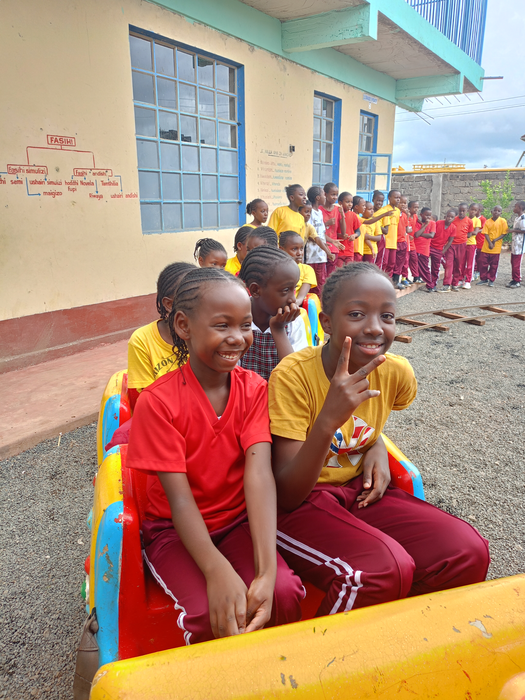
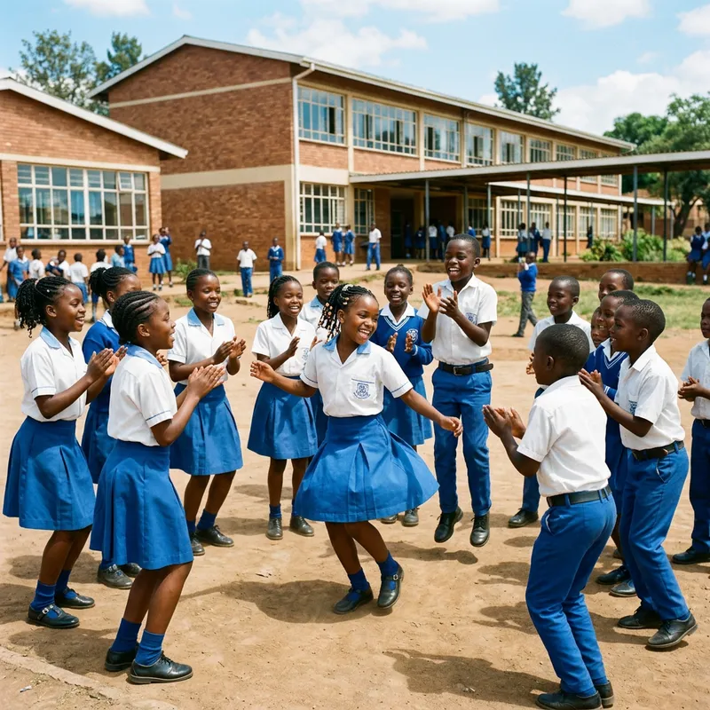
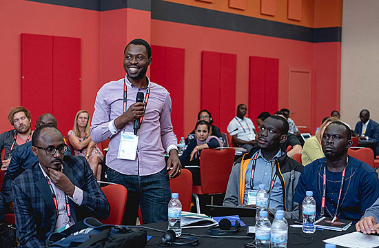
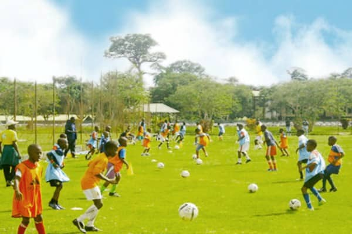
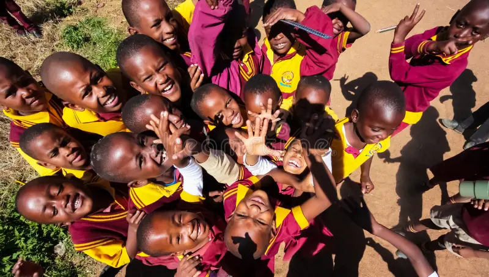
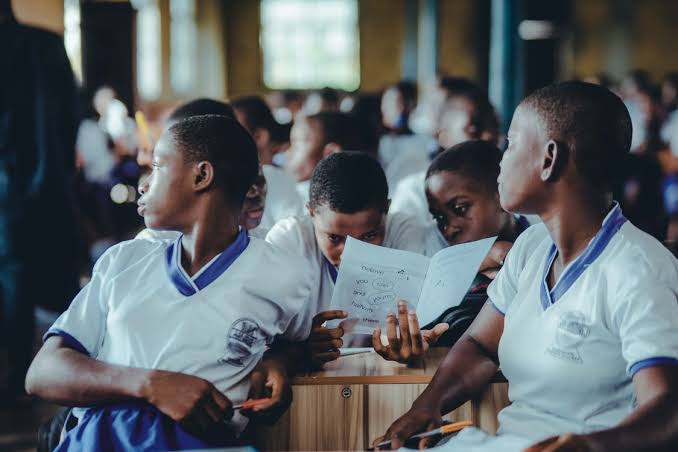
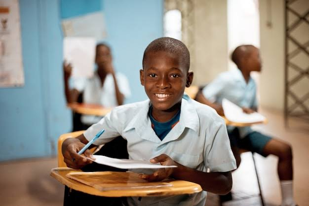
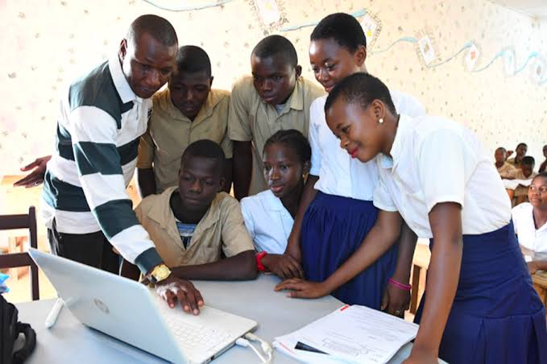
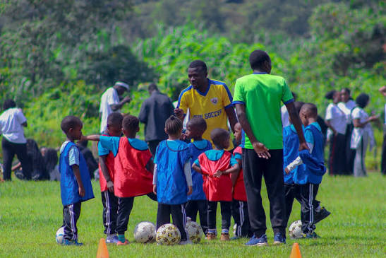
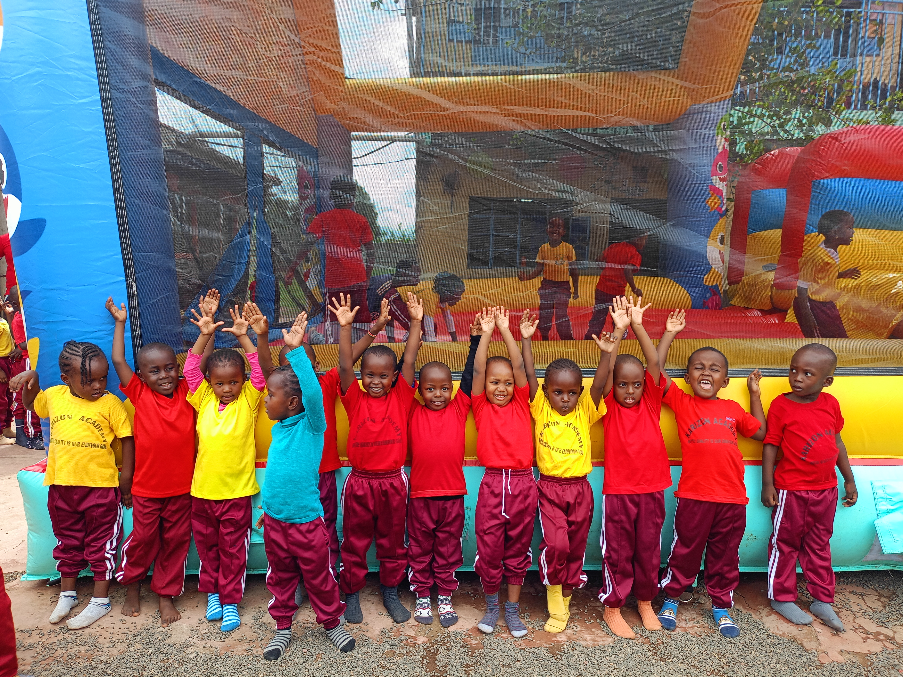

Five acres of forest, garden, and light.
Our campus in Karen is designed to be explored — a place where learning happens as much outside the classroom as inside it, and where every child has room to grow.
Land that teaches.
When we founded Greenhill in 2016, we wanted a campus that felt like a place a child would want to spend their day. Not a compound with a gate. A home with room to move, explore, and be outdoors.
Our five forested acres in the leafy green of Karen give us that. We are minutes from Karura Forest, and the Ngong Hills stand quietly on our horizon. The land shapes everything we do — from where we teach to how we eat to what our children learn.
Our campus is not just a site for a school. It is a second teacher.
Five forested acres
Native trees, walking paths, and shaded classrooms.
Working gardens
Where children grow the food we serve at lunch.
Purpose-built studios
Art, music, and handwork — with light on every wall.
Safe and secure
Gated campus with 24-hour security and CCTV.

Spaces designed for childhood
Every building, garden, and studio on our campus exists for one purpose: to help children learn, play, and grow.

LearningClassrooms & Studios
Purpose-built learning spaces with natural light, wooden furniture, and no screens on the walls. Every classroom opens onto a garden or forest path.
The Library
Over 4,000 books — from picture books to Kenyan histories and world classics. A quiet room with reading nooks and a story corner where every class gathers weekly.

NatureWorking Gardens
Vegetable beds, fruit trees, and a small greenhouse. Children in every grade plant, weed, and harvest — and eat what they grow at lunch.
 Creative
Creative
Art & Music Studio
A bright studio for painting, clay, woodwork, and music. Open every afternoon, with no child ever asked to sit still.

MovementPlaying Field & Forest Trail
A large play field for football, netball, and athletics — plus a forest trail loop for cross-country runs and nature walks.

CommunityThe Dining Hall
A shared table for the whole school. Garden-to-table lunch daily, cooked on-site by our kitchen team. Children and teachers eat together.

A Day in the Life
From the morning bell to the afternoon circle — this is what a Greenhill day looks like.
Where children discover what they love
Every child at Greenhill belongs to at least one club. Here are some of the spaces where curiosity finds a home.
Environmental Club
Tree planting, composting, and the school's ongoing relationship with Karura Forest.
Music & Choir
Our choir and instrumental groups — from Kenyan folk songs to classical ensemble.
Drama Club
Story-based devising, Shakespeare for children, and our annual end-of-year production.
Handwork & Craft
Weaving, woodwork, sewing, and making — guided by our resident craftspeople.
Coding & Robotics
Screen-free coding, problem-solving games, and simple robotics for older learners.
Reading Circle
Quiet reading time, book clubs, and a growing love of stories — fiction and non-fiction.
Young Chefs
Cooking, baking, and food growing — from garden to plate, with recipes from across Kenya.
Debate Society
Public speaking, critical thinking, and friendly competition with other Nairobi schools.
Community Service
Reading with younger children, neighborhood clean-ups, and partnerships with local charities.
Strong bodies, strong minds.
Every child at Greenhill moves every day. Movement is not an afterthought — it is part of how we teach. Our athletics program builds fitness, teamwork, and the confidence that comes from knowing your own body.
Every child is an artist
Music, art, and drama are not extras at Greenhill — they are how our children make sense of the world.




Learning happens outside the gate, too.
Our campus is a starting point, not a boundary. Throughout the year, our learners travel across Kenya — to forests, farms, mountains, and coastlines. These are the trips they remember for the rest of their lives.
Ngong Hills Expedition
Grade 4–6 hike the iconic Ngong Hills — geography, botany, and a whole lot of wind.
Karura Forest Program
Regular visits to Karura Forest for conservation work, bird walks, and quiet writing.
Lake Naivasha Weekend
An overnight trip for Grade 7–8: ecology, boating, and an introduction to Rift Valley geography.
Maasai Mara Study Trip
Our oldest learners spend three days in the Mara, learning from conservationists and Maasai guides.
Coastal Heritage Trip
Grade 8 travels to Mombasa and Lamu to study Swahili history, coastal ecology, and Islamic architecture.
Come walk our campus.
The best way to understand Greenhill is to visit. Meet our teachers, sit under our trees, and see our children at work and play.